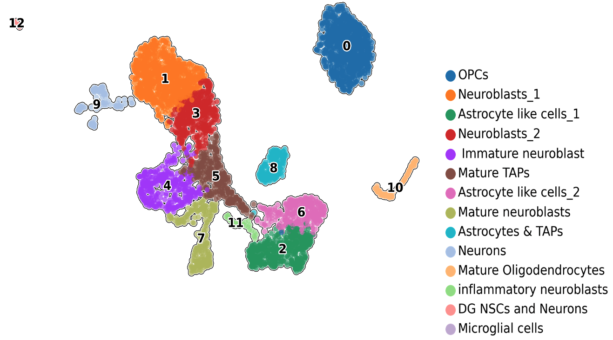
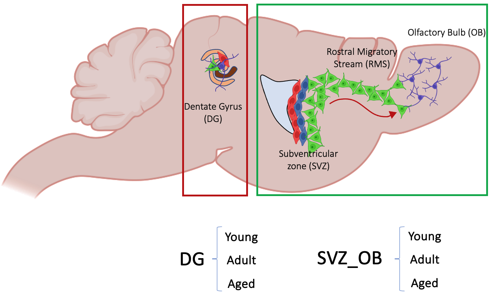
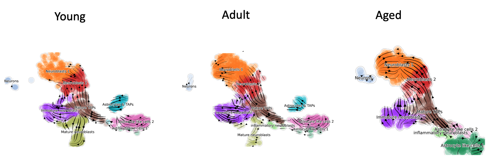

To annotate cell clusters, we selected the best available marker genes corresponding to various cell types from the literature:
- Tfap2c for DG neural stem cells
- Ascl1 for Transient Amplifying Progenitors (TAPs)
- DCX and Igfbpl1 for neuroblasts
- Aqp4 and Gfap for Astrocyte-like cells
- Usp18 for inflammatory cells
- Pdgfra for Oligodendrocyte Progenitor Cells (OPCs)
- Mog for mature oligodendrocytes
- Cx3cr1 for Microglial cells
- Syt1 (Synaptotagmin 1) for Neurons

Cluster annotation based on candidate marker genes.
All data preprocessing and annotation were conducted on a single combined dataset known as "anndata." This comprehensive dataset was created by merging information from all three age groups and distinct regions. In simpler terms, the "anndata" encompasses nine individual datasets, namely DG3, DG14, DG24, SVZ3, SVZ14, SVZ24, OB3, OB14, and OB24.
Note:
3 for 3 Month samples, 14 for 14 month samples and 24 for 24 month samples.

Each of these datasets was organized as a Pandas data frame. This organization allowed us to perform subsequent analyses by extracting specific portions of the data, which could include data from a single region or a combination of different regions and age groups, enabling us to focus our analysis on the specific data of interest.
RNA Velocity serves as a pivotal tool in single-cell genomics, offering a unique perspective into the dynamic behavior of individual cells. By measuring the rate of gene expression changes over time, it acts as a compass, guiding researchers in mapping out cellular trajectories, differentiations, and state transitions. This innovative approach provides invaluable insights into complex biological systems, shedding light on the ever-changing cellular landscape and contributing to a deeper understanding of critical biological processes and disease mechanisms.
In this project, RNA Velocity in the neurogenic lineage was computed using ScVelo 0.2.4 (Bergen et al., 2020) with 2400 highly variable genes per cell. Moments were calculated using the full space of a pre-computed PCA (default value = 30) and 30 neighbors. Velocity was estimated using the dynamical model, and all maps were generated using the original UMAP coordinates.

In our dataset, we noticed the absence of one cluster (Astrocytes & TAPs) in the aged group, signaling a shift in aging cellular dynamics. Additionally, we observed a reverse transition from neurons to neuroblasts, with fewer instances in the young group.
The data indicates increased dedifferentiation in adults and the aged, particularly in neurons reverting to a neuroblast state, possibly to sustain neurogenesis by generating more neurons. This reverse transition is more prominent in the aged population, suggesting that aged neurons may lose their original identity. These insights illuminate the complex cellular dynamics across age groups and their impact on neurogenesis.
In our study, we made some interesting discoveries regarding the differentiation of cells in young and adult mice. We found that both age groups followed a similar path of cell differentiation, transitioning from immature neuroblasts to neurons at the transcription level. However, age seemed to have an impact on this process, suggesting a possible reverse movement from neurons back to neuroblasts, which we think could be due to de-differentiation. This finding aligns with earlier research indicating that cells can sometimes revert to an earlier state, a phenomenon observed in Alzheimer's disease and cancer research.
Another intriguing possibility we considered is that aging may cause neurons to lose their unique characteristics. This idea is supported by previous findings that aging can lead to a loss of cell identity, ultimately resulting in neurodegeneration and disease progression.
Additionally, we noticed an increase in the expression of inflammatory genes in the neuroblast cluster of the aged SVZ-OB, which wasn't present in the younger groups. This suggests that aging may lead to increased inflammation, which can impact neurogenesis. This finding is consistent with previous studies showing that aging is associated with elevated inflammation and reduced neural stem cell proliferation.
It's important to note that while our findings are intriguing, further in vivo research is needed to confirm and expand upon these results.
GitHub Profile
Scan the QR code or click on it to access my GitHub profile: